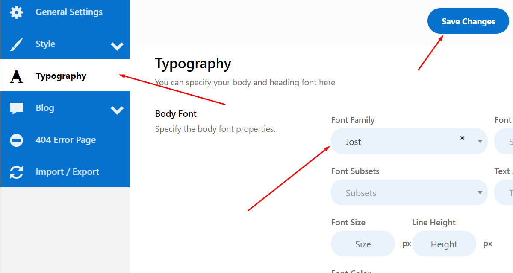

Dynamic - Digital Agency WordPress Theme Documentation
- Item Name : Dynamic - Digital Agency WordPress Theme
- Created: 16 December 2024
- Item Version : v 1.0
- Author : Theme-Fixer
First of all, Thank you so much for purchasing This WordPress Theme and for being my loyal customer. You are awesome! You are entitled to get free lifetime updates to this product + exceptional support from the author directly.
This documentation is to help you regarding each step of customization. Please go through the documentation carefully to understand how this template is made and how to edit this properly.
Theme Requirements
To use Dynamic, make sure your hosting provider is running the following software:
- WordPress 5 or higher.
- PHP 7.4 or greater. WordPress officially suggests to use PHP 7.4.
- MySQL 5.6 or greater.
Recommended PHP Limits
Many issues that you may run into such as: white screen, demo content fails when importing, empty page content and other similar issues are all related to low PHP configuration limits. The solution is to increase the PHP limits. You can do this on your own, or contact your web host and ask them to increase those limits to a minimum as follows:
PHP max_execution_time 300PHP memory_limit 256MPHP upload_max_filesize 1024MPHP post_max_size 1024MPHP max_input_time = 600PHP max_input_vars = 3000
Also consider upgrading your PHP version to the latest version, the newer the better.
WordPress Information
To install this theme you must have a working version of WordPress already installed. If you need help installing WordPress, follow the instructions in WordPress Codex or you can watch the. Below are ll the useful links for WordPress information.
- WordPress Codex – general info about WordPress and how to install on your server
- First Steps With WordPress – general information that covers a wide variety of topics
- FAQ New To WordPress – the most popular FAQ’s regarding WordPress
Theme Installation
It’s easy to install Dynamic. Just follow these steps, they won’t take much of your time.
- Download the theme zip file from your Templatemonster account.
- **All files & documentation **(full zip folder). You will need to extract and locate the installable WordPress file to upload when installing theme
- Log in to your WordPress Dashboard (Example: http://yourwebsite.com/wp-admin).
- Navigate to Appearance > Themes.
- Click on Add New Theme and then Click on
- Click Add New, then click Upload Theme > Choose File
- Click on Choose file button and select theme_name.zip file on your computer, then click Install Now
- When the installation complete, click Activate. You will be redirected to Themes page with Dynamic activated.
Install theme via FTP
To manually upload your new WordPress theme, login with your credentials to your website and locate the wp-content folder in your WordPress install files. Upload the un-zipped folder into the: wp-content/themes folder.
Once uploaded, activate the theme by heading to the “Themes” menu in the WordPress Dashboard. Locate the Dynamic Theme and “Activate”.
The theme files will be stored on your server in the
wp-content/themes/ location.
Note: When uploading your theme with the installer, please ensure you are uploading the theme .zip file, not the entire package you downloaded. In this case, you will be uploading #CCFF00.zip.
Plugin Installation
After activating Dynamic, you will see this notice:
Click Begin installing plugins. You will be navigated to Install Required Plugins page.
Simply check all of them (or all of required plugins and some recommended plugins you like) and from the dropdown select Install, then click Apply.
When install all plugins finished, then all active plugins.
Demo Installation
Our demo data import let's you have the whole data package in minutes, delivering all kinds of essential things quickly and simply. All you need to do is to navigate to Appearance >Import Demo Data.

When importing files, it should look like this:
Wait for some time and the import processing will be complete.
Go to Settings > Reading > Front page displays and choose the page you like to be your front page then hit Save changes.
Go to Settings > Permalinks > Post name checked and hit Save changes.
Free Support System
All of Theme-Fixer items
come with
6 months of included support and free lifetime updates for your Theme.
Once the 6 months of included support is up, you have the opportunity to extend support
coverage up to 6
or 12 months further.
If you choose to not extend your support, you will still be able to submit bug reports via
email or item
comments and still have access to our online documentation knowledge base and video
tutorials.
We have an advanced, secure ticket system to handle your requests. Support is limited to questions regarding the theme’s features or issues that are related the theme. We are not able to provide support for code customizations or third-party plugins. If you need help with anything other than minor customization of your theme, we suggest enlisting the help of a developer.
Item Support Includes
- Answering questions about how to use the item
- Answering technical questions about the item
- Help with defects in the item
- Item updates to ensure ongoing compatibility and to resolve security vulnerabilities
Not Included in Item Support
- Theme customization and requests that require or involve custom coding
- Installation of the item
- Hosting, server environment, or software
- Support for compatibility with 3rd party plug-ins
- Support for out-dated or modified themes
For more information on Item Support Policy please refer to the original document..
Theme Options
You can change the general features of the Dynamic theme.
General Options
General Options
Step 1: Container Width Control
Step 2: Site Fav Icon
Step 3: Site Logo
Step 4: Scroll to Top
Typography
Step 1: Body Font Family
Step 2: Body Font Size
Step 3: Body Font Color
Scroll down others typhography changes here
Theme Color
Step 1: Primary Color
Step 2: Secondary Color
Step 3: Body Text Color
Step 4: Body Background Color/Image
Blog
Step 1: Blog Banner Navigation show / hide
Step 2: Blog Banner Title Change
Step 3: Blog Layout Select
Step 4: Blog Post Grid Select
Step 5: Blog Author show / hide
Step 6: Blog Date show / hide
Step 7: Blog Category show / hide
Step 8: Blog Button Text Changes
Blog Single
Author, Date, Category, Tags, Comments, Admin Information, Previous & Next post button, Comment Options.. show / hide
404 / Error Page
Step 1: Error Image Upload
Step 2: Title, Description, Button Text change options.
Edit Header Information
You can change header top information, logo, header menu select, search icon, admin icon and all information edit using Elementor.
How to Create a New Post
Step 1: Navigate to Posts > Add New Post in your WordPress admin sidebar.
Step 2: Create a title, and insert your post content in the editing field.
Step 3: For a video/audio post, just simply paste the video/audio URL into the Embed Code field.
Step 4: Add Categories from the right side. Categories is meta information you create for the post. Each category is a meta link that your viewer can click to view similar type of posts. To assign it to the post, check the box next to the Category name. You can also access and edit Categories from the Post sidebar item in your WordPress admin sidebar.
Step 5: Add Tags from the right side. Tags is meta information you create for the post. Each tag is a link that your viewer can click to view similar type of posts. Type the name of the tag in the field, separate multiple tags with commas. You can also access and edit Tags from the Post sidebar item in your WordPress admin sidebar.
Step 6: For a single image, click the first Featured Image Box, select an image and click the Set Featured Image button.
Step 7: You can also customize Page Title & Sidebar Options in Settings.
Step 8: Once you are finished, click Publish to save the post.
Here is the screenshot that shows the various areas of the blog post page:
How to Create a New Page
Step 1: Navigate to Posts > Add New Post in your WordPress admin sidebar.
How to Add Widget in Sidebar
Step 1: Appearance >> Widgets. You can see all of the Sidebar here.
Step 2:Choose the Widgets you want and drag it to the Sidebar you want or click on it to choose the Sidebar.
In the case you want to delete its settings, drag it back.

How to Edit Widget
Hit Appearance > Widgets. Choose a widget you want to edit.
Elementor
Step 1: Create New Page.
Step 2: Edit With Elementor.
Step 3: Widget Drag & Drop in the Page.
Translations
Our theme is ready for translation and included .pot file. You can convert this site to other language.Thank you for use this theme.
Once again, thank you so much for purchasing this theme. As I said at the beginning, I'd be glad to help you if you have any questions relating to this theme. No guarantees, but I'll do my best to assist. If you have a more general question relating to the themes on Templatemonster, you might consider visiting the forums and asking your question in the "Item Discussion" section.